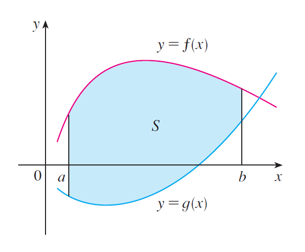
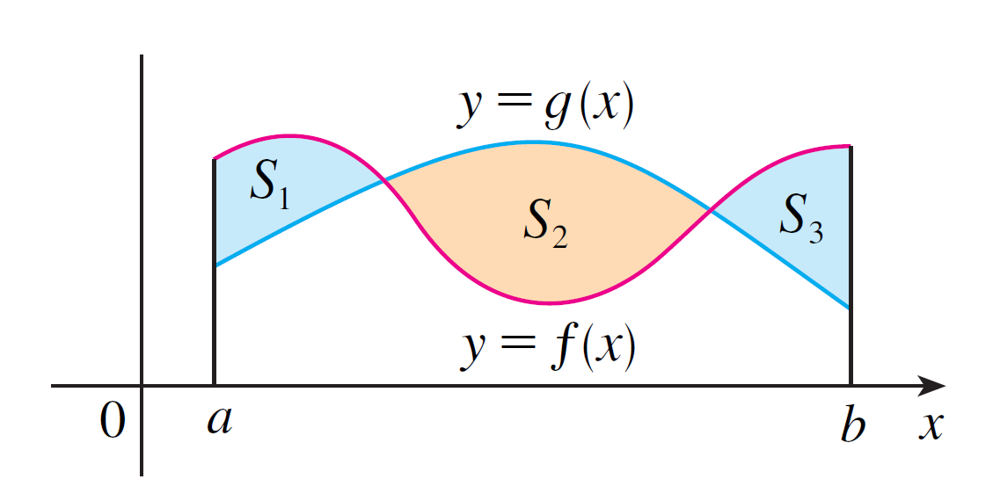

Anteriormente definimos e calculamos áreas de regiões sob gráficos de funções. Aqui, usaremos as integrais para encontrar áreas de regiões entre gráficos de duas funções.
Considere a região $S$ que se encontra entre duas curvas $y = f(x)$ e $y = g(x)$ e entre as retas verticais $x = a$ e $x = b$, onde $f$ e $g$ são funções contínuas e $f(x) \geq g(x)$ para todo $x$ em $[a, b]$. (Veja a Figura 1).

Figura 1: Região $S$ delimitada pelas curvas $f(x)$ (superior) e $g(x)$ (inferior) no intervalo $[a, b]$.
A área $A$ da região limitada pelas curvas $y = f(x)$, $y = g(x)$ e pelas retas $x = a$, $x = b$, onde $f$ e $g$ são contínuas e $f(x) \geq g(x)$ para todo $x$ em $[a, b]$, é dada por:
Para encontrarmos a área entre as curvas $y = f(x)$ e $y = g(x)$ onde $f(x) \geq g(x)$ para alguns valores de $x$, mas $g(x) \geq f(x)$ para outros valores de $x$, então dividimos determinada região $S$ em várias regiões $S_1, S_2, \dots$ com áreas $A_1, A_2, \dots$ como mostrado na Figura 2.

Figura 2: Região delimitada pelas curvas com pontos de interseção, dividindo a área total em sub-regiões.
Em seguida, definimos a área da região $S$ como a soma das áreas das regiões menores $S_1, S_2, \dots$, ou seja, $A = A_1 + A_2 + \dots$.
Uma vez que o módulo da diferença das funções nos garante sempre um valor positivo, temos a seguinte relação lógica:
A partir dessa definição, temos a seguinte expressão geral para calcular a área $A$.
A área entre as curvas $y = f(x)$ e $y = g(x)$ e entre $x = a$ e $x = b$ é: